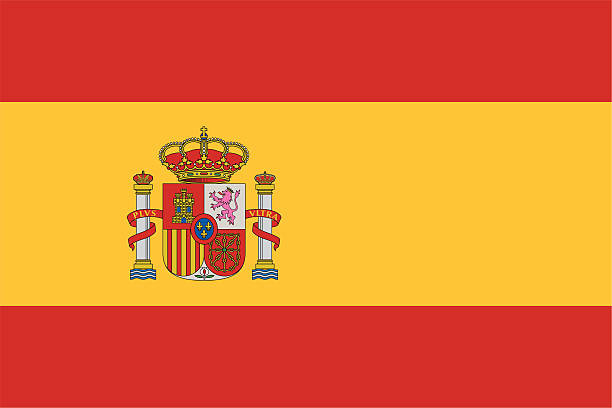

Oprogramowanie


Adobe Photoshop Adobe Illustrator
Języki

Angielski Hiszpański

Nazywam się Kamil Jastrzembowski. Jestem absolwentem wyższej Szkoły Turystyki i Hotelarstwa w Gdańsku, w którym obecnie też mieszkam. Aktualnie całą swoją uwagę koncentruję na rozwijaniu umiejętności w zakresie Front End Development, aby w najbliższej przyszłości znaleźć w tej dziedzinie pracę.
Od 2011 roku, pomagam prowadzić rodzicom restaurację. W młodości przychodziłem po szkole na zmywak, a z biegiem czasu i zbierająć kolejne doświadczenie, robiłem nowe rzeczy - wszystkie które były niezbędne. W między czasie nauczyłem się korzystać z programów Adobe Photoshop i Adobe Illustrator aby móc swobodnie zajmować się reklamą w restauracji. Oprócz tego zajmowałem się gotowaniem, obsługą klientów, zamówieniami i zatrudnianiem oraz szkoleniem nowych pracowników.
Adobe Photoshop Adobe Illustrator
Angielski Hiszpański